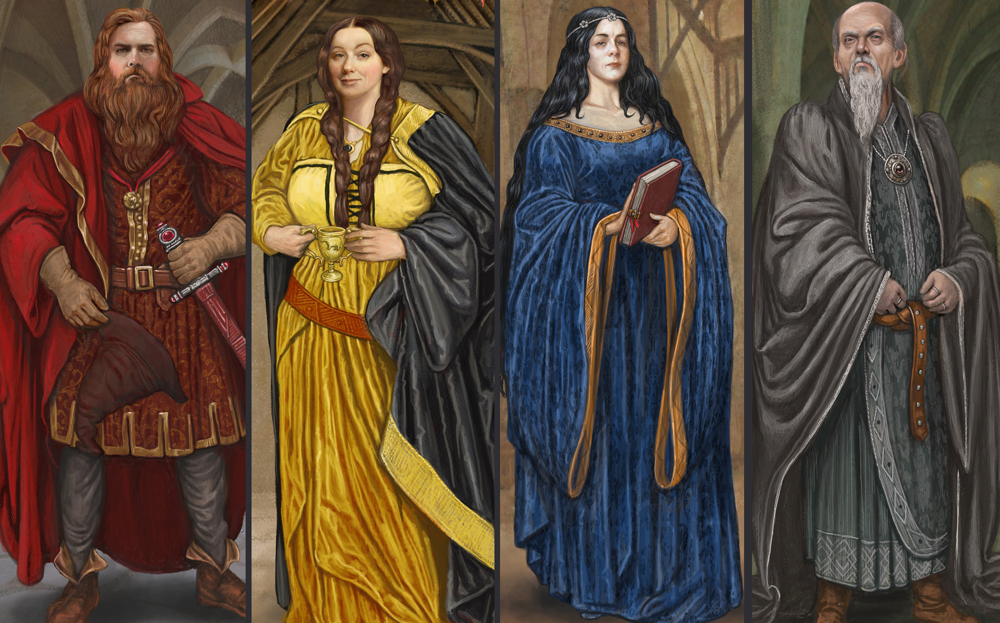

A Escola de Magia e Bruxaria de Hogwarts foi fundada no século X, na Escócia, por quatro grandes bruxos: Godrico Gryffindor, Helga Hufflepuff, Rowena Ravenclaw e Salazar Slytherin. Suas personalidades e os critérios para admissão no ensino deram origem a quatro casas, conforme seus sobrenomes, para abrigar os estudantes.

Os alunos são encaminhados para uma das Casas por meio da decisão do Chapéu Seletor, um artefato mágico capaz de ler a ambição de um indivíduo. Seu julgamento, por vezes impreciso, leva os estudantes para uma das quatro casas de Hogwarts: Grifinória, Lufa-Lufa, Corvinal e Sonserina.
Na obra, a perspectiva retrata com prioridade o cotidiano dos alunos da Grifinória, já que é a Casa dos protagonistas. Contudo, isso não diminui a qualidade das demais, que têm histórias igualmente ricas e curiosas. Descubra com qual você mais se identifica.
Lar dos bravos e cavalheiros, o símbolo da Grifinória apresenta em seu estandarte um orgulhoso leão, acompanhado das cores vermelha e amarelo-dourada. A Casa valoriza feitos de coragem e superação pessoal que costumam ser realizados por altruísmo. Seus estudantes tendem a ser bastante aventureiros, mas se destacam, sobretudo, pela lealdade.
Entretanto, os alunos da Grifinória podem ser imprudentes nos atos de bravura, muitas vezes por teimosia ou falta de melhor julgamento da situação — o que pode ser visto como egoísmo. Alvo Dumbledore, Harry Potter e Minerva McGonagall são alguns dos membros mais conhecidos da Casa.
Os bruxos pertencentes à Corvinal se destacam por sua exímia inteligência. Nesse contexto, suas principais características são relacionadas a sabedoria, criatividade e personalidade única, o que garante a eles certa excentricidade. Contudo, a valorização exacerbada do academicismo pode torná-los perfeccionistas, frios, insensíveis e demasiadamente críticos em relação às outras Casas.
Um misterioso corvo (ou uma águia, conforme algumas representações), acompanhado das cores azul e bronze, compõe o estandarte da Corvinal. Entre seus membros mais populares, estão Luna Lovegood, Gilderoy Lockhart e Garrick Olivaras. Curiosamente, Rowena Ravenclaw é a única entre os quatro fundadores de Hogwarts sem uma tradução regionalizada para seu nome.
Os estudantes da Lufa-Lufa são dedicados, pacientes e honestos. Suas admiráveis características os tornam trabalhadores árduos e modestos, sendo receptivos a todos os demais tipos de bruxos. Por outro lado, o excesso dessas qualidades pode se tornar um ponto negativo: justamente por sua flexibilidade e compreensão, os alunos podem ser complacentes e muito dependentes de outras pessoas, tornando-se ingênuos.
O estandarte da Lufa-Lufa apresenta vívido amarelo e preto como as principais cores, com um astuto texugo como mascote. Seus membros mais conhecidos são Newt Scamander, Cedrico Diggory e Ninfadora Tonks.
Sonserina é a Casa com a pior reputação. Parte dessa fama é, de certa forma, justificável, já que ela abrigou alguns dos maiores bruxos das trevas enquanto ainda eram estudantes. Entretanto, muitos de seus membros têm boas qualidades que redimem a má fama, o que os torna grandes alunos e líderes natos.
Os membros da Sonserina têm como características, sobretudo, a ambição e a busca pela grandeza, por isso estão sempre se dedicando a alcançar e expandir metas e se empenhando com inteligência em diversas áreas da magia. Por outro lado, essas qualidades podem promover um senso de competição muito aflorado, o que os torna presunçosos e egoístas.
Com uma imponente serpente como mascote, o estandarte da Sonserina é colorido com verde e prata. Alguns de seus membros mais populares são Merlin, Tom Riddle, Draco Malfoy e Dolores Umbridge.